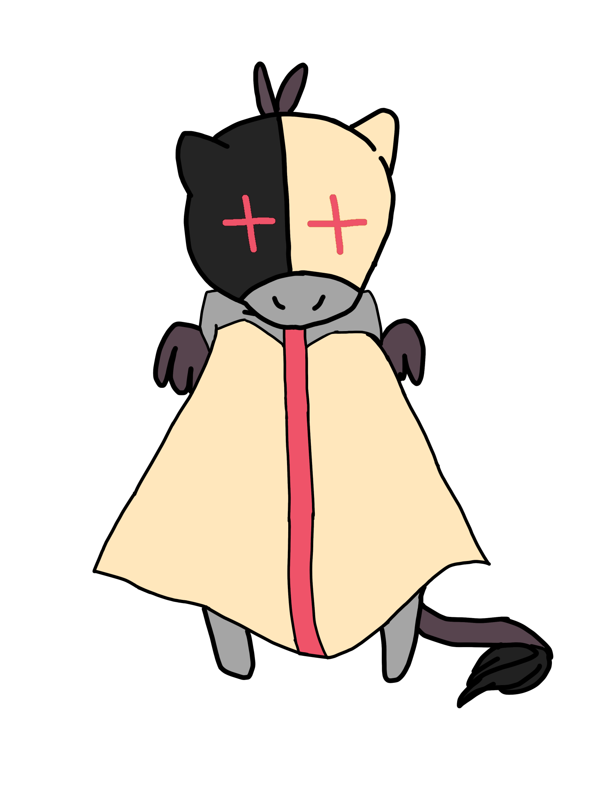

Head of the bad incorporation! A bunny that is possibly a vigilante?? Ring any bells? Danger! Known for his ruthless plans to “take risks” for the “aid of others” as quoted by Swirls himself! On top of being head, he is in charge of making sure these people do their harmful jobs in the name of “good.” We’ve also heard he’s very oblivious to people’s inputs and has a bad temper! Do not join this team if you don’t want to fall victim!
Circy Swirls
Founded in 2321; STAR inc.
↓ Circy Inc. Planner ↓
Circy's Info:
Twin of Pop. Suspected to be a conmouse, thus being unreliable! Known for his snarkily confident attitude, he’s not very welcoming sounding! He is a planner of those they need to take relentless action over for the “good” of others!
↓ Circy Inc. Monitoring Figure ↓

Duke's Info:
From what we hear, he is a lazy horse, only in it for the money and rarely communicates? What a downer! He’s supposedly a “monitoring figure” who walks all high and mighty in front of new recruits! It can be a very intimidating experience, we do not recommend it! He is also in charge of city events that help gain the publicity and a “good view” on their incorporation!
↓ Circy Inc. Planner ↓
Baby's Info:
They’re an easily annoyed cat that doesn’t like other people’s ideas! Known for being relatively quiet but still snappy. They’re an extra planner that works hand in hand with Circy and seems to be very secretive of their planning. One to try to persuade you through silence to join their team. Don’t let their convincing silence fool you!
Facts on Team:
A team formed in 2319, and has been around for 20 years, it is well trusted in companies such as Spark, Fizzy Grape, Jing, and 50+ This production team solves problems as little as advertising these products to protecting this world from a comet. An Incorporation that started by Fizzy Dasc a Daschund who branched off companies from a probable scandal with Swirls Inc. The production team is well entrusted and makes sure to welcome new recruits; as of now it is looking for more ambitious players to help in the preserving of the world.